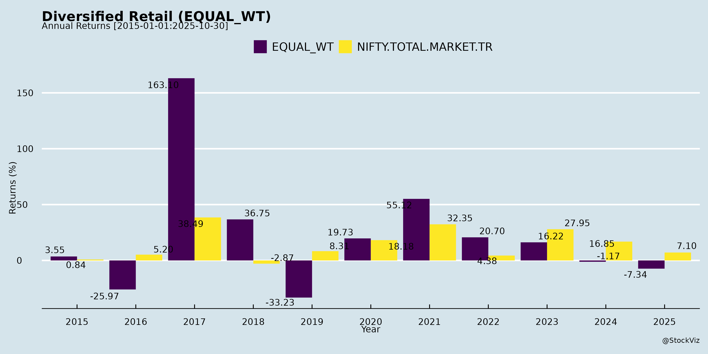
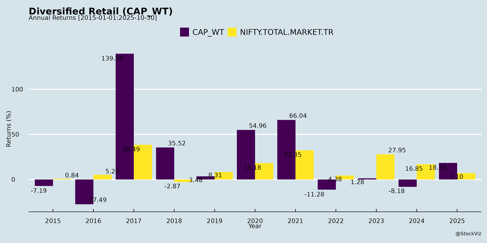
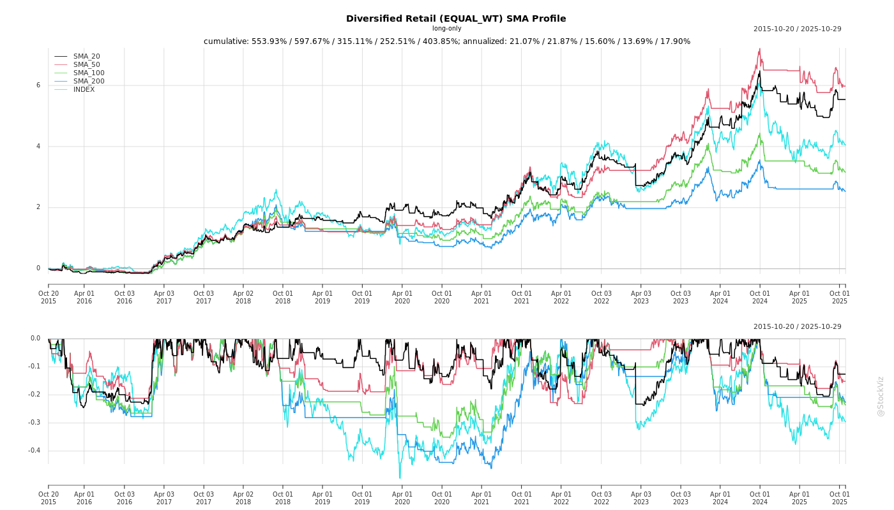
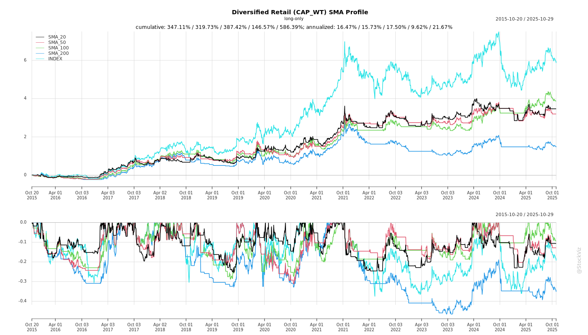
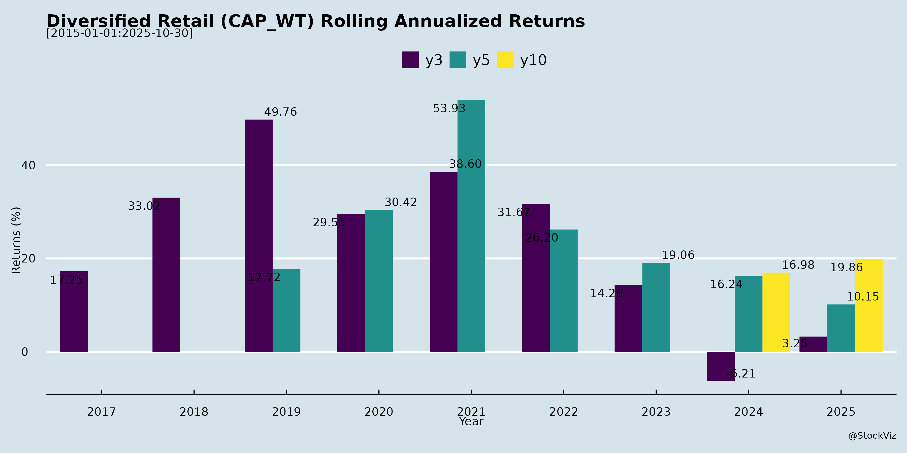

Diversified Retail
Industry Metrics
February 20, 2026
Annual Returns



Cumulative Returns and Drawdowns
SMA Scenarios


Current Distance from SMA
Rolling Returns

Market Cap
EBIT (% of Industry Total)
Revenue (% of Industry Total)
AI Summaries
Analyst
asof: 2025-12-03
Indian Diversified Retail Sector Analysis
Input Sources: Analysis based on Q2/H1 FY26 earnings transcripts/announcements from key players (DMart/Avenue Supermarts, Shoppers Stop, Electronics Mart India, Patel Retail, Spencer’s Retail, V-Mart, Vishal Mega Mart). Sector themes include value/premium grocery/apparel/electronics retail, omnichannel shifts, private labels, and quick commerce.
Headwinds
- Quick Commerce Disruption: Intense competition from Zepto/Blinkit eroding offline SSSG (DMart: 1-1.5% impact; Spencer’s: offline flat QoQ). Consumers shifting to convenience (10-30 min delivery), pressuring neighborhood stores (Electronics Mart: NCR SSSG 11% but margins low).
- Demand Volatility & Seasonality: GST changes deferred purchases (Electronics Mart: sales degrowth); weak summer impacted AC inventory (~₹200-300 Cr pile-up across players). Unseasonal rains hurt Puja/Diwali sales (Spencer’s).
- Cost Pressures: Wage inflation, high real estate (DMart: micro-market challenges), employee costs up 20-25% (Electronics Mart). Lease accounting (IndAS 116) boosts depreciation.
- Inventory & Mix Issues: High DOH (Electronics Mart: 76 days), excess AC/TV stock; shift to low-margin categories (DMart: non-food dip).
- Offline Migration: Footfall down due to online (Spencer’s Nature’s Basket: flat QoQ); new stores ramp slowly (DMart: 131 <4-yr-old stores at 3% EBITDA).
Tailwinds
- Low Penetration: Organized retail <10%; huge white spaces (DMart: ~1,800-1,900 store gap; Patel: cluster expansion in MMR/Pune).
- Consumption Boost: Lower GST/income tax slabs, interest rate cuts aiding disposable income (DMart/Electronics Mart). Festive rebound (Electronics Mart: 20-25% H2 growth).
- Premiumization & Mix Shift: High-end categories growing (Shoppers Stop: Beauty +22%, Watches +13%; Electronics Mart: large appliances 38-43%).
- Private Labels/Exports: Margin accretive (DMart: slow build; Patel: 17% retail sales, targeting 35%; exports ₹50 Cr order book).
- Efficiency Gains: Loyalty programs (Spencer’s: 50K members, 20% sales; Shoppers Stop: 13M base); SPSF up (Spencer’s: ₹1,600 vs ₹1,200 YoY).
Growth Prospects
- Store Expansion: Disciplined (DMart: >50 stores/Yr, 10-20% base; Electronics Mart: 30 more in FY26; Patel: 60+ by FY27; Shoppers Stop: premium stores).
- Omnichannel Acceleration: Quick delivery scaling (Spencer’s Jiffy: ₹52 Cr Q2, 30% QoQ, 10K orders/day target; DMart Ready: 21% growth, 24 cities).
- Revenue CAGR: Low-double digits FY26 (DMart: 15%; Electronics Mart: low-teens; Patel: 15-20%; Spencer’s: online-led).
- Margin/EBITDA Expansion: Mature stores 6-7% EBITDA (DMart: 6.8%; Patel: 8.7%); SPSF targets (Spencer’s: ₹2,000-2,300; Electronics Mart: NCR ₹30 Cr/store).
- Category Tailwinds: Mobiles/large appliances (Electronics Mart: 44-48%); beauty/value fashion (Shoppers Stop: INTUNE 78 stores); private labels/exports (Patel: blended spices/RTÉ).
Key Risks
- Competition Intensity: Quick commerce unit economics improving; D2C/premium brands bypassing (DMart: premium D2C perception issue).
- Execution in Expansion: New stores EBITDA drag (Electronics Mart: 131 young stores at 3%; ramp-up 2-3 yrs); real estate scarcity (DMart: North focus).
- Macro/External: Weak demand/inflation (DMart: deflation volume pickup but staples soft); geopolitical/export delays (Patel/Spencer’s).
- Financial: Debt for capex (Electronics Mart: ROCE 9.8%; Spencer’s: promoter funding); inventory liquidation losses (₹100-300 Cr AC risk).
- Operational: Vendor concentration/price volatility (Patel/Shoppers Stop); shrinkage/waste in fresh/FMCG; tech/infra for quick commerce (fulfillment costs).
Summary: Sector resilient amid quick commerce headwinds, with tailwinds from penetration/omnichannel. Growth via expansion/private labels (15-20% CAGR feasible), but profitability hinges on SPSF ramp (₹2,000+) and offline-online balance. Risks center on execution/debt; mature players (DMart) best positioned, while others optimize portfolios. Overall outlook: Moderate growth (10-15% revenue), steady margins (5-8% EBITDA), high competition vigilance.
Financial
asof: 2025-12-02
Analysis of Indian Diversified Retail Sector (Q3 & 9M FY25 Insights)
The analysis is based on unaudited financial results from key players: DMart (Avenue Supermarts), Vishal Mega Mart, Shoppers Stop, Spencer’s Retail, Osia Hyper Retail, and JHS Svendgaard Retail Ventures. These represent hypermarkets/supermarkets (DMart, Osia), value retail (Vishal), departmentals (Shoppers Stop), multi-format (Spencer’s), and niche retail (JHS). Sector shows mixed performance: robust growth in leaders (DMart, Vishal) amid losses in strugglers (Spencer’s, JHS). Revenue up ~15-20% YoY on average, driven by festive sales, but profitability pressured by costs.
Headwinds (Challenges)
- High Operating Costs: Employee expenses (up 15-30% YoY across most), depreciation (store expansions), and other expenses (rent, marketing) rising faster than revenue in mid/small players (e.g., Spencer’s employee costs at 16% of revenue; JHS at 40%).
- Inventory & Margin Pressure: Fluctuating changes in stock-in-trade (e.g., DMart +222 Cr inventory build-up in Q3); high purchases indicate discounting/competition.
- Loss-Making Players: Spencer’s reports massive 9M loss (₹1,466 Cr standalone, ₹1,780 Cr consolidated) due to store rationalization; JHS 9M loss ₹19 Cr. Shoppers Stop Q2 loss from exceptional fire damage.
- Debt & Finance Costs: Elevated (e.g., Vishal ₹315 Cr Q3; Osia ₹118 Cr; Spencer’s ₹407 Cr), signaling capex/leverage strain.
- Regulatory Scrutiny: GST demands (DMart ₹123 Cr contingent; Vishal Group ₹236 Cr); Shoppers Stop ₹20 Cr service tax liability (Supreme Court pending).
Tailwinds (Positives)
- Revenue Momentum: Strong YoY growth: DMart +17% Q3 (₹15,565 Cr standalone); Vishal +20% (₹3,136 Cr consolidated); Osia +15% (₹407 Cr); Shoppers Stop +9% (₹1,311 Cr). 9M growth 15-30% driven by festive Q3 (Oct-Dec).
- Profitability in Leaders: DMart PAT +6% Q3 (₹784 Cr standalone); Vishal PAT ₹263 Cr Q3 (up YoY); Osia PAT ₹90 Cr Q3. High throughput in efficient formats (DMart’s low-cost model).
- Other Income Boost: Interest/investments (DMart ₹36 Cr Q3; Vishal ₹19 Cr; JHS ₹85 Cr) aiding bottomlines.
- Expansion Scale: DMart/Vishal benefiting from store adds/network effects; Vishal post-IPO momentum.
Growth Prospects
- Volume-Led Expansion: Tier-2/3 cities penetration (DMart 9M revenue ₹43,327 Cr; Vishal ₹8,168 Cr). Hyper-value formats thriving amid inflation (Vishal EPS ₹1.15 9M).
- Omnichannel Shift: Offline dominance with online pilots (DMart e-com; Vishal subsidiaries); potential quick commerce tie-ups.
- Festive/Consumption Recovery: Q3 uptick signals rural/urban demand rebound; full FY25 revenue could hit 15-20% growth if macros stable.
- M&A/Listing Tailwinds: Vishal/JHS recent listings unlocking capital; consolidations possible (e.g., Spencer’s restructuring).
- Long-Term: Organized retail share to rise to 20-25% by 2030 (from 10%); efficiency leaders like DMart (ROE ~30%) to gain 2-3x market share.
Key Risks
| Risk Category | Details | Exposure |
|---|---|---|
| Financial | High debt (Spencer’s current liabilities exceed assets by ₹7,100 Cr); going concern doubts (Spencer’s notes promoter funding needed). | High (Spencer’s, JHS); Medium (Osia) |
| Regulatory/Legal | GST/service tax contingents (DMart ₹123 Cr; Vishal ₹236 Cr; Shoppers ₹20 Cr); appeals pending. | Medium-High across board |
| Operational | Store closures/restructuring (Spencer’s South/NCR exit); inventory obsolescence/fire losses (Shoppers ₹2 Cr exceptional). | High (Spencer’s); Low (DMart) |
| Competitive | E-com/quick commerce (Blinkit, Zepto) eroding grocery share; discounting wars squeezing margins. | Medium (All) |
| Macro | Inflation/rural slowdown; high capex (depreciation 5-10% of revenue). | Medium |
| Execution | Small players’ losses persist (JHS/JHS); dependency on promoters (Spencer’s). | High (Strugglers) |
Overall Outlook: Optimistic for Leaders (DMart, Vishal) with 15-25% revenue CAGR; Cautious for Laggards (Spencer’s turnaround critical). Sector FY25 growth ~12-15%, but profitability hinges on cost discipline. Monitor Q4 for festive sustainability and debt metrics. Recommendation: Focus on efficient players; diversify away from loss-makers.
General
asof: 2025-12-03
Summary Analysis: Indian Diversified Retail Sector
Using the provided regulatory filings from key players (DMart, Vishal Mega Mart, V-Mart, Electronics Mart India, Patel Retail, Spencer’s Retail, Osia Hyper Retail, JHS Svendgaard, Future Consumer), the sector shows resilience amid macroeconomic pressures. Companies are focusing on operational efficiency, expansion, and omni-channel strategies, but face demand softness and execution risks. Below is a structured analysis of headwinds, tailwinds, growth prospects, and key risks.
Headwinds (Challenges)
- Soft Consumer Demand: Spencer’s Retail reported flat LFL sales growth in a “soft festive trading environment” with muted offline growth (-2% YoY) and overall revenue de-growth (-21% YoY consolidated due to store closures). This reflects broader weak consumer spends during peak seasons.
- Operational Disruptions: Electronics Mart faced a godown fire (May 2025), causing ~Rs. 7.53 Cr damage; rebuilding ongoing. Supply chain risks highlighted by V-Mart’s VP Supply Chain superannuation.
- Store Rationalization: Spencer’s closed 47 loss-making stores in non-core regions, leading to revenue contraction (SRL standalone -24% YoY).
- Legal/Compliance Pressures: Future Consumer’s NCLT case adjourned (ongoing insolvency proceedings by a fund). JHS Svendgaard’s IEPF campaign signals unclaimed dividends risk. Osia’s qualified audit due to delayed NBFC payments.
- Margin Pressures: Spencer’s Nature’s Basket saw GM% dip 70 bps YoY; Osia’s high inventory buildup (Rs. 471 Cr).
Tailwinds (Positive Factors)
- Operational Efficiency & Profitability Turnaround: Spencer’s achieved milestone pre-Ind AS EBITDA positivity (first in 22 quarters), +46% YoY EBITDA growth at SRL (Rs. 17 Cr), driven by cost cuts (opex down 32% YoY) and GM% expansion (+80 bps to 19.7%). Consolidated EBITDA improved to 3.8% of sales.
- Strong Funding Access: DMart issued Rs. 200 Cr CP (82 days, 6%, ICRA A1+ rating, unsecured), signaling robust liquidity/credit profile.
- Investor Confidence: Analyst store visits (Vishal), detailed earnings presentations (Spencer’s), and proactive disclosures.
- Insurance Mitigation: Electronics Mart secured full claim settlement (Rs. 7.53 Cr), minimizing fire impact.
- Financial Growth: Osia reported revenue surge (+25% YoY to Rs. 1,427 Cr) and PAT +7% to Rs. 19.5 Cr.
Growth Prospects
- Network Expansion: Patel Retail added a store (total 48). Spencer’s opened 2 Nature’s Basket stores (14k sq ft); plans for omni-channel scaling.
- Omni-Channel Push: Spencer’s online sales +20% YoY, launching “JIFFY” quick delivery. Focus on core geographies post-exits for sustainable LFL growth (2% in continuing regions).
- Profitability Scaling: Spencer’s targets growth in offline/online while maintaining EBITDA positivity ahead of FY26 timeline. Nature’s Basket +2% YoY revenue, stable margins (28-29%).
- Revenue Potential: High growth in smaller players like Osia (inventory/supply chain scaling). Sector-wide store adds and festive campaigns (Spencer’s Diwali/Black Friday).
- Long-Term: Efficiency-led model (DMart’s funding strength, Spencer’s cost rigor) positions for 10-15% CAGR in organized retail amid urbanization.
Key Risks
| Risk Category | Details | Impacted Companies | Mitigation |
|---|---|---|---|
| Demand/Competition | Soft festive sales; quick commerce rivalry | Spencer’s, sector-wide | Cost controls, online pivot |
| Liquidity/Debt | CP issuance (6% coupon), delayed payments | DMart, Osia | Strong ratings; insurance inflows |
| Operational | Fires, mgmt. changes, supply chain | Electronics Mart, V-Mart | Insurance, succession planning |
| Legal/Regulatory | NCLT cases, IEPF transfers, audit qualifications | Future Consumer, JHS, Osia | Disclosures, campaigns |
| Financial | Inventory buildup, forex/working capital strain | Osia (Rs. 471 Cr inventory), Spencer’s (-12% 9M revenue) | Rationalization, EBITDA focus |
Overall Outlook: Moderately positive with tailwinds from efficiency and digital shifts outweighing headwinds like demand weakness. Growth hinges on festive recovery and execution; monitor Q4 FY25 for sustained EBITDA traction. Sector PE likely compresses on macro caution but rewards profitable players like DMart/Spencer’s. Investors should watch consumer spending revival and legal resolutions.
Investor
asof: 2025-12-03
Indian Diversified Retail Sector Analysis
Input Sources: Analysis based on Q2/H1 FY26 earnings transcripts, investor presentations, and announcements from key players (DMart/Avenue Supermarts, Electronics Mart India, Patel Retail, Spencer’s Retail, Shoppers Stop, V-Mart, Vishal Mega Mart). Sector characterized by value/hypermarket formats (DMart, Patel), electronics/specialty (Electronics Mart), premium/department stores (Shoppers Stop, Spencer’s Nature’s Basket), and quick commerce hybrids (Spencer’s Jiffy).
Headwinds (Key Challenges)
- Quick Commerce Disruption: Intense competition from Zepto/Blinkit eroding offline footfall (1-1.5% SSG impact per DMart; Spencer’s offline flat QoQ). Consumers shifting to 10-30 min delivery, pressuring traditional stores (Spencer’s offline cannibalized).
- Margin Pressures: Expansion costs (employee, depreciation) drag EBITDA (Electronics Mart: 5.1% Q2; DMart stable at 7.9% but mix shift). Discounting post-GST cuts (Electronics Mart gross margin dip) and inventory pile-ups (₹200cr+ ACs).
- Macro/Seasonal Volatility: GST deferrals (Sep’25 sales dip across firms), weak summer/monsoon (ACs unsold), unseasonal rains (Spencer’s Puja impact).
- Store Ramp-Up Delays: New stores (<4yrs old) dilute productivity (Electronics Mart: newer 131 stores at 3% EBITDA vs. mature 6.8%; DMart North India scaling).
- Online Losses: E-com growth (DMart Ready +21%, Spencer’s Jiffy +30% QoQ) but EBITDA negative (fulfillment/tech/marketing costs).
Tailwinds (Supportive Factors)
- Value Resilience: DMart-like efficiency (₹34k sales/sqft; 8.4% LFL); loyalty programs boost repeats (Shoppers Stop: 83% sales from 13M members; Spencer’s 80% retention).
- Private Labels/Vertical Integration: Margin accretive (DMart 20-20-20 rule; Patel 17%→35% aspiration; Spencer’s in-house blends).
- Premiumization/Omni-Channel: Shoppers Stop (+7% LFL, Beauty +22%); Spencer’s Jiffy (positive unit economics, AOV ₹750); Electronics Mart mobiles/large appliances steady.
- Exports/Manufacturing: Stability/diversification (Patel: 30% revenue, ₹50cr order book).
- Macro Boost: RBA rate cuts, IT slab reductions, GST rationalization spurring demand (DMart/Spencer’s festive buoyancy).
Growth Prospects
- Offline Expansion: 10-20% annual store adds (DMart 50+ FY25, target 600+; Patel 60+ by FY27; Electronics Mart 30 more FY26). Tier-2/3/North focus (DMart UP; Patel Pune).
- Online Scaling: Measured quick commerce (Spencer’s Jiffy: 10k orders/day target; DMart Ready 24 cities). Omni-channel hybrids (Shoppers Stop SSBeauty.in).
- SPSF/ASP Uplift: Target ₹2,000-2,300/sqft consol (Spencer’s from ₹1,600); premium shifts (Shoppers Stop ATV +8%).
- Revenue CAGR: Low teens (DMart 16.7% FY25; Patel 15-20% FY26; Electronics Mart low double-digit). Overall sector: 15-20% driven by urbanization/incomes.
- EBITDA Expansion: Via leverage (mature stores); FY26 consol breakeven aspiration (Spencer’s offline).
| Company | FY26 Revenue Growth Guide | EBITDA Margin Guide |
|---|---|---|
| DMart | 10-15% store adds | ~8% |
| Electronics Mart | Low double-digit | ~6% (post-summer) |
| Patel | 15-20% | 7.5-8% |
| Spencer’s | Online-led QoQ buoyancy | Offline breakeven |
Key Risks
- Competition Intensity: Quick commerce market share gains (DMart: counter via stores; Spencer’s measured scale).
- Execution Risks: New store ramp-up (2-3yr maturity; Electronics Mart NCR 1% EBITDA); capex/debt (₹25-75cr FY26 Electronics Mart).
- Macro Sensitivity: Inflation/deferrals (GST/volumes); weak seasons (ACs 38-43% mix).
- Supply Chain/Vendor: Concentration (Patel top vendors); disruptions (Spencer’s Nature’s Basket imports).
- Capital/Debt: Infusion needs (Spencer’s promoter debt; dilution risk); ROCE dilution from expansion (Electronics Mart 9.8%).
- Online Sustainability: Losses scaling (Jiffy ₹3cr/month loss at ₹20cr sales); customer acquisition (Spencer’s ₹330 CAC).
Overall Outlook: Sector resilient (value formats outperform), but quick commerce forces omni-channel pivot. Growth via Tier-2 expansion/private labels (15%+ CAGR feasible), but margins volatile (5-8%). Prioritize SPSF>₹2,000/sqft for profitability. Bullish on DMart/Patel (integrated models); cautious on high-capex players.
Meeting
asof: 2025-12-03
Analysis of Indian Diversified Retail Sector (Based on Provided Filings)
The provided documents cover Q2 FY26 (ended Sep 30, 2025) financial results, board outcomes, AGMs, and postal ballots from key players like Vishal Mega Mart, V-Mart Retail, Electronics Mart India, Patel Retail, Spencer’s Retail, Osia Hyper Retail, JHS Svendgaard Retail Ventures, and Future Consumer Limited. These represent a mix of value retail (apparel/FMCG), electronics, hypermarkets, and consumer products. The sector shows resilience amid challenges, with revenue growth but profitability pressures. Below is a structured summary of headwinds, tailwinds, growth prospects, and key risks.
Headwinds (Challenges)
- Persistent Losses & Margin Pressure: Companies like Spencer’s Retail (consolidated loss ₹12,540 lakhs, half-year) and Future Consumer (standalone profit masked by exceptional items; liquidity crunch) report heavy losses due to high finance costs (e.g., V-Mart ₹3,569 lakhs half-year), depreciation from leases (Ind AS 116), and inventory fluctuations. Electronics Mart shows modest profits but exceptional items (fire loss, store sales).
- Liquidity & Debt Crunch: Severe in Spencer’s (current liabilities exceed assets by ₹92,948 lakhs; NPA classification) and Future Consumer (debt ₹57,234 lakhs; defaults). High borrowings (Patel Retail repaid post-IPO but still elevated) amid rising interest rates strain cash flows.
- Operational Rationalization: Store closures/ramp-downs (Spencer’s discontinued loss-making stores in South/NCR; V-Mart lease reassessments). Inventory buildup and weak demand in Q2 (e.g., V-Mart revenue dip in Sep quarter).
- Regulatory/Forensic Scrutiny: Future Consumer faces SEBI forensic audits, lender probes, NCLT cases (e.g., preferential payments from Future Retail insolvency), and debt assignment to ARC.
- Macro Pressures: Festive season muted (early indicators); high capex/depreciation from expansion.
Tailwinds (Positive Factors)
- Revenue Momentum: Strong top-line growth—Patel Retail (₹40,490 lakhs half-year, post-IPO), V-Mart (₹169,209 lakhs, up 17% YoY), Electronics Mart (₹33,304 lakhs, up 2%). Vishal Mega Mart’s governance moves (director appointments) signal stability.
- Fundraising Success: Patel Retail’s IPO (₹24,266 lakhs raised) funded working capital/debt repayment. JHS Svendgaard post-AGM compliance.
- Cost Optimization: Lease term revisions (V-Mart exceptional gain ₹2,418 lakhs FY25), asset sales (Electronics Mart IQ stores gain ₹77 lakhs), and write-backs (Future Consumer sundry balances ₹8,646 lakhs).
- Digital/Compliance Adoption: E-voting/AGMs (Osia Hyper, JHS Svendgaard) reflect governance improvements. NSDL e-voting standard across filings.
- Sector Recovery: Value retail resilient (V-Mart EBITDA ₹19,768 lakhs); electronics steady amid consumer durables demand.
Growth Prospects
- Store Expansion & Network Growth: V-Mart (475+ stores implied), Electronics Mart (focus on wellness/pharmacy chains), Patel Retail (post-IPO capex). Hyper-value formats (Vishal Mega Mart) poised for tier-2/3 penetration.
- Diversification: Shift to high-margin categories (V-Mart retail trade 99% revenue; Electronics Mart consumer durables). Digital marketplaces (V-Mart minor segment).
- Asset Monetization/OTPs: Future Consumer/Spencer’s plans for ₹100s of crores via PPE/investments sales; promoter infusions expected.
- Festive/Seasonal Uplift: Q3 potential from Diwali (V-Mart Q2 revenue 17% YoY signals momentum).
- M&A/Partnerships: Director appointments (Vishal Mega Mart) for strategy/tech expertise; JV resolutions (Future Consumer Hain Future).
- Long-term: Organized retail penetration (India <10% vs. 50%+ in peers); e-com hybrid models.
Projected Sector Growth: 15-20% CAGR to FY28 (value retail 25%+), driven by consumption recovery, but profitability lags revenue (EBITDA margins 5-10%).
Key Risks
| Risk Category | Description | Examples from Filings | Mitigation |
|---|---|---|---|
| Financial/Liquidity | Debt defaults, NPAs, going concern (material uncertainty in Spencer’s/Future). | Spencer’s: Liabilities > Assets by ₹93k lakhs; Future: ₹57k lakhs debt. | Monetization, OTS (Patel success). |
| Operational | Inventory glut, store profitability, supply chain. | V-Mart negative inventory changes; Spencer’s closures. | Rationalization, cost cuts. |
| Regulatory/Legal | Forensic audits, NCLT (Future Retail insolvency impact), SEBI probes. | Future Consumer: NCLT hearings Nov 2025; SEBI forensic. | Disclosures, legal defenses. |
| Market/Competition | Weak demand, e-com disruption, inflation. | Q2 revenue dips (V-Mart Sep); unorganized retail. | Value pricing, expansion. |
| Governance | Auditor qualifications (JV fair value); director changes. | Future: JV non-cooperation; Vishal postal ballot. | Board strengthening. |
| Execution | Asset sale delays, capex overruns. | Spencer’s/Future plans unproven. | Promoter support. |
Overall Sector Outlook: Cautiously Optimistic. Tailwinds from consumption/consolidation outweigh headwinds if debt resolved (watch Q3 festive). High-beta sector—revenue growth 10-20% possible, but EBITDA margins key (target 8-12%). Risks tilted financial/regulatory; monitor NCLT/ARC outcomes. Recommended: Focus on debt reduction, hyper-local strategies.
Press Release
asof: 2025-12-03
Summary Analysis: Indian Diversified Retail Sector (Q2FY26 Insights)
The Indian diversified retail sector (spanning grocery, value fashion/apparel, FMCG, general merchandise, and premium/departmental formats) demonstrated resilience in Q2FY26, with companies like DMart, Vishal Mega Mart, V-Mart, Shoppers Stop, and Patel Retail reporting robust revenue growth (15-22% YoY), positive SSSG (7-13%), and aggressive store expansions (8-28 stores added per quarter). Total store counts range from 48 (Patel) to 742 (Vishal), reflecting a mix of grocery-led efficiency (DMart) and value/premium apparel focus. EBITDA growth (9-85%) outpaced revenue in most cases, aided by operating leverage, though PAT margins faced pressure. Key themes include premiumization, own-brand strength, and festive tailwinds.
Tailwinds
- Strong Demand & SSSG: Mature store growth (DMart: 6.8%; Vishal/V-Mart: 11-13% adjusted SSSG) signals consumption recovery, boosted by weddings, festive early-onset (e.g., Durga Puja), and govt GST reforms (benefits passed to consumers).
- Store Expansion & Footprint Deepening: 17-51 stores added in H1FY26 across players; focus on Tier-2/3 cities, metros (19 cities for DMart e-com), and high-density suburbs (Patel in MMR). Vishal at 742 stores (12.76 Mn sq ft); Shoppers Stop at 303 outlets.
- Category Mix & Premiumization: Apparel/FMCG (44-74% own brands at Vishal), beauty (+22% at Shoppers Stop), and premium sales (69% mix, +16% YoY) drive higher ATV/ASP (+6-8%). Loyalty programs (Shoppers First Citizen: 83% sales) and quick commerce (Vishal: 695 stores) enhance retention.
- Operational Efficiency: Backward integration (Patel processing units), own brands (74.7% Vishal revenue), and leverage (V-Mart EBITDA margin +320 bps to 8.9%) support margins.
- Policy Support: GST rationalization and rural revival cited as positives.
| Company | Q2 Revenue Growth | SSSG | Store Adds (Q2) |
|---|---|---|---|
| DMart | 15.4% (₹16,219 Cr) | 6.8% (2+ yr stores) | 8 |
| Vishal | 22.4% (₹2,982 Cr) | 11.3% | 28 gross |
| V-Mart | 22% (₹807 Cr) | 11% | 25 net |
| Shoppers Stop | 10% (₹1,175 Cr) | N/A (LFL entry +6%) | 7 |
Headwinds
- Margin Compression: EBITDA margins dipped (DMart: 7.6% vs 7.9%; Vishal adjusted 8.5%; Shoppers core 3.4% implied). PAT growth lagged revenue (DMart: 5.1%; Shoppers loss despite sales up).
- Value Segment Softness: Slowness in value fashion (Shoppers INTUNE LFL flat initially); e-com exits (DMart ceased 5 cities).
- Opex Pressures: Investments in marketing/loyalty (Shoppers), new stores, and capex (₹34 Cr Shoppers Q2) offset gains. Lease/IND AS 116 adjustments impacted reported metrics.
- Macro Shifts: Early festivals distorted YoY (Vishal); cautious optimism amid economic stability needs.
Growth Prospects
- High: Aggressive expansion (Vishal: 46 net H1 adds; Shoppers: 10 Q3; Patel: 48th store). Omni-channel/quick commerce scaling (Vishal 10.8 Mn users; Shoppers ss.beauty.in 3x sales).
- Medium-Term Catalysts: Premiumization/private brands (Shoppers 13% mix; Vishal 74.7%), beauty distribution (Shoppers +103% YoY), and unorganized-to-organized shift (₹100 Bn opportunity). Festive/wedding season, rural revival, and policy sops to sustain 15-20% revenue CAGR.
- Projected: H1FY26 revenue +15-22%; store count to 800+ for leaders by FY26-end. Digital/loyalty to boost repeat (Shoppers 69%; Vishal 157 Mn base).
Key Risks
- Consumption Slowdown: Weakness in value/middle-income segments (evident in DMart mature growth); inflation or rural distress could hit SSSG.
- Competition: Intense from unorganized (80% market), e-com giants, and peers; cannibalization/refurbishments (Vishal adjusted SSSG).
- Execution/Operational: New store ramp-up delays, supply chain (Shoppers INTUNE), high capex/debt (Shoppers working capital negative).
- External: Economic volatility, input costs, GST/policy changes, forex (beauty imports). Forward-looking disclaimers highlight political/economic risks.
- Financial: Margin erosion from opex/esop (Vishal pre-ESOP PAT); losses in new ventures (Shoppers INTUNE -₹24 Cr EBITDA Q2).
Overall Outlook: Positive with cautious optimism. Sector poised for 15-20% growth FY26, driven by expansion and premium shifts, but margins need monitoring amid competitive pressures. Leaders like DMart/Vishal offer stability; value players (V-Mart) show high-beta upside. Investors should watch SSSG and festive Q3 for sustained momentum.
Copyright © 2023 SAS Data Analytics Pvt. Ltd. All rights reserved.